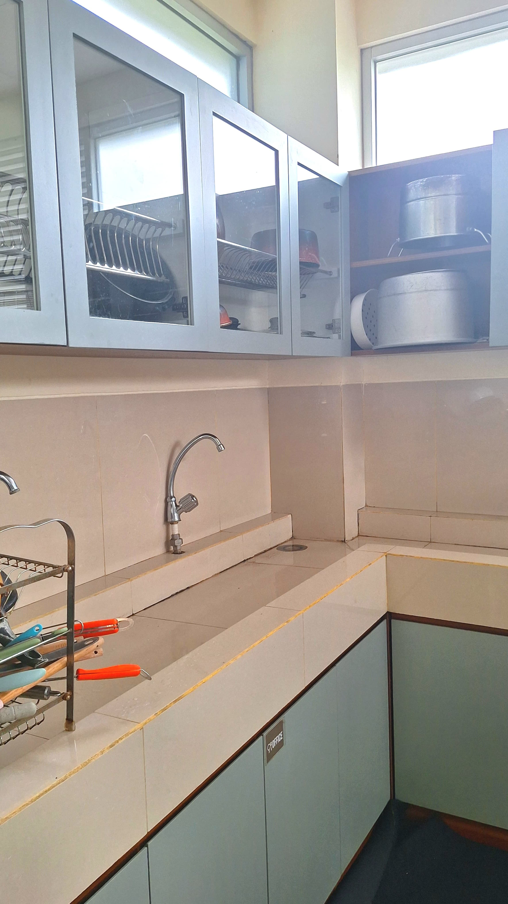
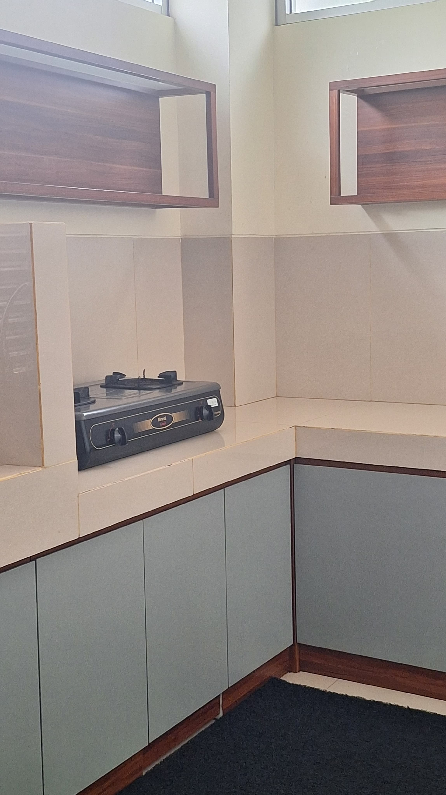
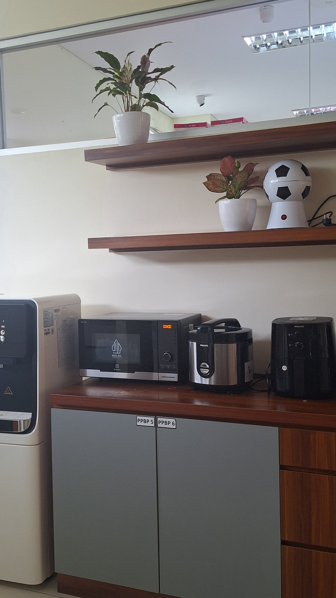

Kitchen
This area is located in the lower ground and being a part of multifunctional room, serving as a space for students to cook and prepare their meal. Some other facilities available in Kitchen include: